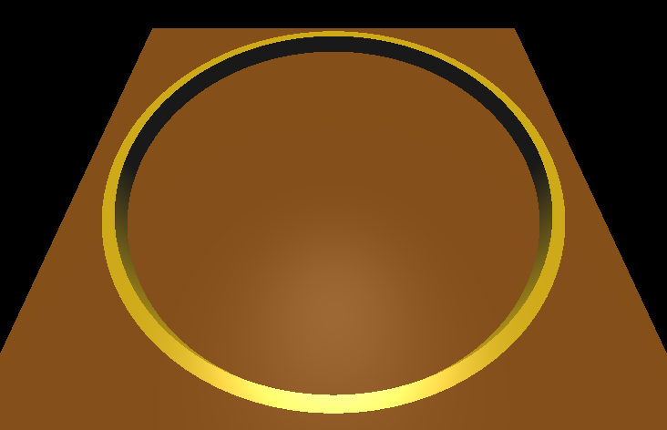
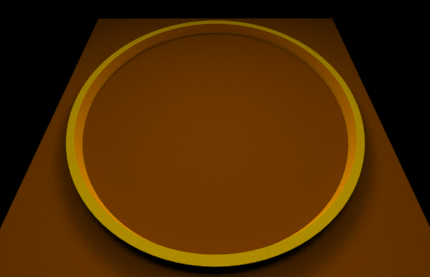
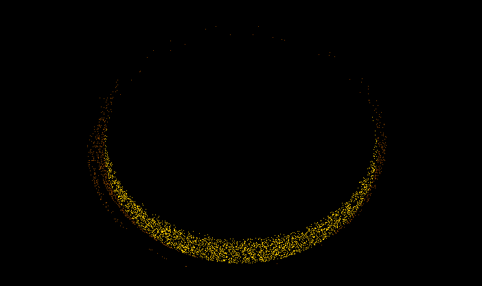
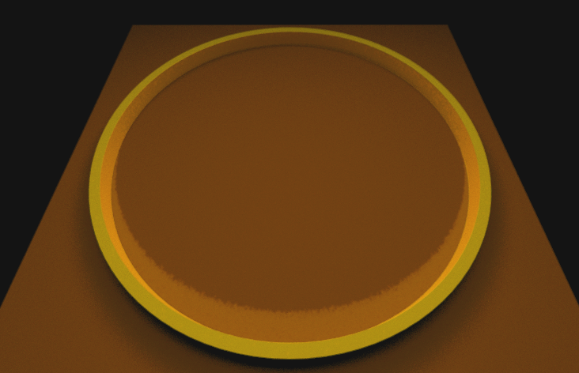

GPU Photon Mapping
TLDR
This project achieves real time GPU photon mapping by translating photons into small triangles and utilizing Apple's implementation of a BVH in their ray tracing intersection library to gather photons from a photon map on the GPU. Photons are gathered by doing ray casts around the gather point. A ray cast that intersects a photon triangle 'gathers' that photon. Metal kernel functions translate the results of the ray casts into a caustic texture, which is passed to the path tracer and added to the result of the path tracer's shading.
How Photon Mapping Works
Photon mapping is one of the most photorealistic and computationally expensive rendering algorithms. Photon mapping simulates the path that a photon takes through a scene. At each scene intersection point, the color and position of the photon is recorded in a photon map. This process is repeated with many photons and many bounces, until the desired number of photon records is generated. During scene rendering, the photon map is queried in order to gather the photon records within a specified radius. The more photon records that are gathered from the photon map, the brighter that spot should be in the rendered image.
Rendering Modes
There are four rendering modes in the project.
The first is rasterization mode. This mode is material-based and uses the Phong reflection model for rendering.
The second is path tracing mode, which uses kernel functions to generate the output image, and runs on the GPU. This mode works like most other stochastic path tracers, and is based off of Apple's ray tracing project.
The third mode is photon rasterization mode. This mode visualizes the photons in the photon map. Note the caustic generated on the inside of the ring near the bottom. This is caused by light reflecting off of the ring on to the ground.
The fourth mode is photon mapping mode, which combines the photon map with path tracing to render caustics.
Photon Generation
The photon map is generated by tracing the path a photon takes from the light source through the scene for a specified number of bounces. My photon map ignores the inital emmision of photons into the scene, and only begins recording photons after the first bounce. This is because I only want to use the photon map for caustic generation, which occurs after photons have bounced around the scene a few times.
After all of the photons are generated, photons are turned into 'photon triangles'. These photon triangles are tiny triangles centered at the photon's position. The triangles are fed into a Metal MPSTriangleAccelerationStructure. This allows the program to gather photons by doing ray casts around the gather point. This also enables GPU photon gathering without the need to implement a GPU-friendly spacial data structure.
Photon Gathering
When a ray intersects the scene, multiple 'gather rays' are generated above the intersection point and are directed down onto the surface. These gather rays intersect with the photon triangles. If an intersection occurs, the color of the photon is recorded in a large causic texture. The colors of all the gather rays are summed together via a texture reducer, and the final color is written to a texture, which is then sent to the path tracing shading compute function where it is added to the result of the path traced texture.
Caustic Texture Generation
Gather rays around the same gather point are rendered into pixel tiles in a large caustic texture. The size of each tile depends on the number of gather rays. Then, the pixels in the tiles are summed to a final pixel value that represents the value of the caustic for the gather point. This pixel summation is done via a 'texture reducer', which essentially mipmaps the large texture. Instead of using Metal's mipmapping functionality, I implemented my own version. This was because I wanted to preserve all color data from the large causic texture, and I worried that a standard texture could not handle the precision needed to accomplish this.
My texture reducer works by reading in the large caustic texture, converting the rgb value to 3 unsigned integer values, which are then stored as a Color data structure in a buffer. Then, a kernel function repeatedly adds groups of four Color data structures together and outputs the sum to an output buffer. Once the buffer is summed to the desired size, another kernel function converts the Colors into the final caustic texture, and performs any desired scaling or averaging on the pixels.
Lessons Learned
Real time photon mapping is expensive and difficult, even for a GPU. This project used up so much of my CPU and GPU that it caused other windows on my laptop to render incorrectly. I ran into multiple GPU instruction timeouts. Metal would also complain if I made my photon gather ray buffer too large, so this limited the quality of rendered images. Still, it was a fun project.